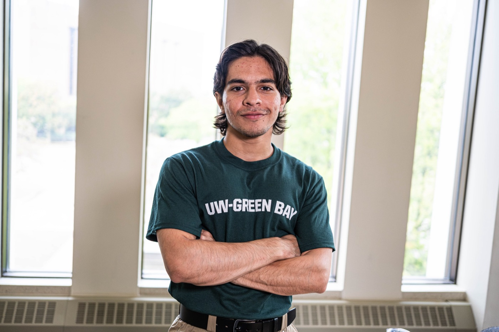

Carbon storageCO₂
Carbon storage
Geomechanics and monitoring of CO₂ injection: pressure, fluid migration, and induced seismicity.

Geoscience senior at the University of Wisconsin–Green Bay. I study how fluids and stress move through rock and ice, using seismic signals and geophysical surveys to see what happens underground.
About
I'm drawn to the questions you can't see directly: what water is doing inside rock, how a slope weakens before it fails, and how a reservoir answers when CO₂ is pushed into it.
I'm from Pakistan and came to Wisconsin to study geoscience, first at St. Norbert College and then at UW–Green Bay. I taught myself Python and began building my own tools for seismic data, from waveform processing in ObsPy and SAC to a pipeline that detects P-wave arrivals automatically.
This summer I completed the 12-week NSF–EarthScope Seismology Skill Building Workshop. As a research assistant on four projects, I've run electromagnetic surveys, measured fluid inclusions from an ore deposit, and sampled soils and water across Wisconsin. For my PhD I want to work where fluid flow meets rock and ice mechanics.
Geomechanics and monitoring of CO₂ injection: pressure, fluid migration, and induced seismicity.
Detecting earthquakes, landslides, and other mass movements in continuous seismic records.
Basal hydrology, glacial seismicity, and models of how ice flows and fractures.
Research
A Python and ObsPy pipeline that pulls waveform data from FDSN web services and applies STA/LTA triggers to detect P-wave arrivals automatically.
Electromagnetic surveys mapping subsurface conductivity around a suspected municipal water-main leak, turned into GIS conductivity maps and anomaly models.
Fluid inclusion microthermometry to characterize the fluids that formed the ore at Eagle Mine and how their temperature changed through time.
Soil characterization of farmland being converted to solar, establishing a baseline before the panels go in.
Collected and analyzed water samples across connected creek, river, and lake systems to assess total phosphate distribution and nutrient transport.
Presentations2026
Chaudhry, M.R., Luczaj, J., & Warr, L.
Chaudhry, M.R. & Warr, L.
Chaudhry, M.R. & Fermanich, K.
Field
Training
University of Wisconsin–Green Bay · expected Dec 2026
GPA 3.96 / 4.00 · Dean's List every semester
De Pere, Wisconsin · GPA 4.00 / 4.00
NSF & EarthScope
12-week program in scientific computing, observational seismology, seismic data analysis, and applied Python (ObsPy).
Field & lab2024 – 2027
South Dakota School of Mines & Technology · AAPG-funded
Mapping lava flow stratigraphy and pāhoehoe and ʻaʻā structures in an active rift zone with GPS traverses, compass-and-clinometer mapping, and sampling for petrography.
UW–Green Bay geoscience field trip
Outcrop mapping and stratigraphic correlation across the Penokean, Yavapai, and Baraboo orogenic belts.
Mineralogy field trip
Glacial stratigraphy, Penokean structures, and igneous assemblages including the Wolf River Batholith.
UW–Green Bay
Logged over 1,000 feet of drill core for the composite stratigraphic column of northeastern Wisconsin. Measured chloride, phosphorus, nitrate, carbon, and nitrogen by flame photometry and colorimetry, plus TSS/VSS.
Certifications2024 – 2026
Intro to CS & Python · Computational Thinking & Data Science
Universiti Sains Malaysia
Esri
Honors
Society of Exploration Geophysicists · one student per academic year
AIPG National Conference
American Association of Petroleum Geologists · funds Hawaiʻi volcanology field camp
American Institute of Professional Geologists · consecutive years
College of Science, Engineering & Technology, UW–Green Bay · one to three students a year
St. Norbert College · five first-year students
For organizing a town hall during campus budget cuts, attended by a third of the student body.
Toolkit
Leadership & life
UW–Green Bay Student Government Association
Co-authored the first AI policy framework in UW System history with the Board of Regents. Represented 13,000 students, expanded the Senate from 4 to 30 members, and led a team of 40+ student leaders. Served as student representative on the search committee for the 10th President of the UW System, representing 165,000+ students, and coordinated student governance across 12 UW campuses.
UW–Green Bay
Organized a campus-wide Ramadan iftar for 150+ attendees that raised $1,500, ran bi-weekly programming drawing 100+ participants, and rebuilt the Geology Club's visual identity with the Graphic Design department.
USA Powerlifting & Pakistan Powerlifting Federation
Ranked 2nd in Pakistan (Junior, 59 kg). USAPL nationals qualifier representing St. Norbert College.
Contact
I'm looking for a PhD lab working on induced seismicity, geophysical monitoring, or ice and fluid mechanics. If that's you, I'd love to hear from you.
raffaychaudhary1@gmail.com